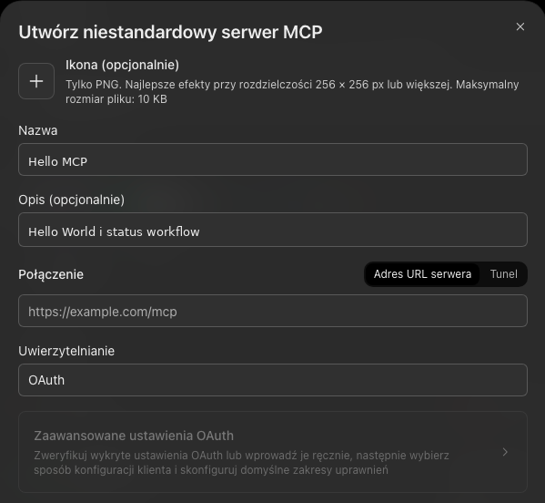
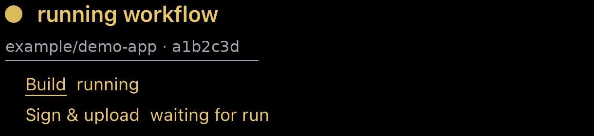
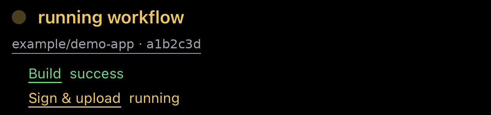

Hello World + GitHub Actions
ChatGPT,
własny plugin.
Zacznij od Hello World. Dodaj widżet statusu workflow. Połącz własny serwer MCP z ChatGPT przez URL.
Najpierw sprawdzimy połączenie. Potem ten sam serwer rozbudujemy o kartę workflow, która przy ponownym otwarciu rozmowy sprawdza status przed pierwszym wyświetleniem.
1. Co zbudujemy
Najpierw narzędzie hello_world, które odpowiada „Hello, World!”. Potem kartę pokazującą status konkretnego workflow w GitHub Actions. ChatGPT połączy się z naszym serwerem MCP przez publiczny adres HTTPS.
Przygotuj Node.js 22 lub nowszy, Git, terminal i konto ChatGPT z możliwością dodania własnego serwera MCP. Do drugiej części potrzebujesz własnego publicznego repozytorium GitHub. Przykład nie wymaga klucza API OpenAI ani tokena GitHub.
2. Uruchom Hello World
Pobierz kompletny kod przykładu. Poniższe polecenia pobierają tylko katalog tutorialu. Działają w terminalu macOS, Linux i PowerShell.
git clone --filter=blob:none --sparse https://github.com/feegloo/feegloo.github.io.git mcp-tutorial
cd mcp-tutorial
git sparse-checkout set chatgpt-wlasny-plugin/code
cd chatgpt-wlasny-plugin/code
npm ci
npm run helloOtwórz localhost:8787/health. Powinieneś zobaczyć {"ok":true}. Pozostaw terminal otwarty.
Jak działa narzędzie Hello World?
Serwer opisuje argument name i zwraca tekst. Pełny transport HTTP znajdziesz w hello.mjs.
server.registerTool("hello_world", {
inputSchema: { name: z.string().default("World") },
}, async ({ name }) => ({
content: [{ type: "text", text: `Hello, ${name}!` }],
}));3. Nadaj serwerowi publiczny URL
Na próbę użyj ngrok: zainstaluj narzędzie dla swojego systemu, utwórz konto i skonfiguruj authtoken według instrukcji w jego panelu. W drugim terminalu uruchom:
ngrok http 8787Skopiuj pokazany przez ngrok adres HTTPS i dodaj na końcu /mcp. Na przykład:
https://twoja-domena.ngrok.app/mcpSprawdź też https://twoja-domena.ngrok.app/health. To adres Twojego działającego serwera, nie adres tego tutorialu. Samo otwarcie /mcp w przeglądarce nie jest testem protokołu MCP.
4. Dodaj własny serwer MCP w ChatGPT
W przeglądarce otwórz Wtyczki w ChatGPT. Wybierz Dodaj → niestandardowy serwer MCP (nazwy mogą się różnić zależnie od języka interfejsu). Jeśli tej opcji nie ma, sprawdź dostęp i ustawienia trybu deweloperskiego na swoim koncie.
- Nazwa: Hello MCP. Opis: Hello World i status workflow.
- Połączenie: Adres URL serwera. Wklej swój pełny adres HTTPS z
/mcp. - Uwierzytelnianie: Brak / No authentication. Nasze publiczne demo nie implementuje OAuth.
- Potwierdź komunikat o dodaniu własnego serwera i utwórz wtyczkę. Jeśli pojawi się osobny krok instalacji, wykonaj go.


W nowej rozmowie wybierz @Hello MCP i poproś:
Wywołaj hello_world z name = World.Wynik narzędzia powinien zawierać Hello, World!. Jeśli ChatGPT tylko opisuje działanie, poproś o rzeczywiste wywołanie narzędzia.
5. Rozwiń serwer o status workflow
W swoim publicznym repozytorium dodaj plik .github/workflows/demo.yml z naszego przykładu i zapisz commit. W zakładce Actions sprawdź uruchomienie „Demo workflow”. Zachowaj pełny, 40-znakowy SHA tego commita.
W katalogu serwera utwórz plik .env na podstawie .env.example. Wpisz własnego właściciela i nazwę repozytorium:
GITHUB_REPOSITORY=twoj-login/twoje-publiczne-repo
PORT=8787Zatrzymaj Hello World przez Ctrl+C. W tym samym katalogu wykonaj:
npm run build
npm startSerwer nadal udostępnia Hello World. Dodaje show_workflow_status i get_workflow_status. Tunel może pozostać na tym samym porcie. W szczegółach wtyczki w ChatGPT odśwież listę narzędzi. Jeśli zmienił się publiczny URL, popraw połączenie lub dodaj je ponownie.
Wybierz wtyczkę i wyślij poniższą prośbę, zastępując nawias pełnym SHA:
Pokaż widżet przez show_workflow_status.
sha: <pełny 40-znakowy SHA commita>
workflow: demo.ymlTo narzędzie odczytuje istniejący run. Nie uruchamia workflow. Wynik dotyczy dokładnie wskazanego commita i pliku YAML, dzięki czemu nowszy commit na main nie zmienia śledzonego wyniku.


6. Widżet od razu z właściwym statusem
W workflow.mjs narzędzie czeka na odczyt GitHub API i zwraca structuredContent.watch. Metadane wskazują zasób HTML karty:
_meta: {
ui: { resourceUri: "ui://workflow/card.html" },
"openai/outputTemplate": "ui://workflow/card.html"
}Zasób ma typ text/html;profile=mcp-app. widget.js korzysta z mostka MCP Apps, aby czytać status i otwierać link do runu. build.mjs pakuje kod widżetu w jeden HTML.
Po ponownym wejściu do rozmowy ChatGPT może odtworzyć starą odpowiedź narzędzia z czasów, gdy workflow jeszcze trwał. Dlatego karta startuje ukryta: ze starej odpowiedzi bierze tylko SHA i nazwę workflow, pyta serwer o aktualny status i dopiero wtedy pokazuje wynik. Nie wyświetla po drodze żółtego „running”.
W trakcie działania odświeża się co 60 sekund. Po zakończeniu przestaje pytać. Nowe załadowanie widżetu ponownie sprawdza status przed jego pokazaniem.
| Odczyt GitHub | Stan karty |
|---|---|
| Brak runu dla tego SHA | Waiting for run |
| Run niezakończony | Running Workflow |
| completed + success | Zielony: Workflow succeeded |
| failure / timed_out / action_required | Czerwony: Workflow failed |
| cancelled / skipped / neutral | Osobny stan: cancelled lub skipped |
| Błąd API lub połączenia | Status unavailable |


7. Gdy coś nie działa
- Nie można połączyć serwera
- Sprawdź publiczne HTTPS, końcówkę /mcp, działający proces Node i tunel. Dla demo wybierz brak uwierzytelniania.
- ChatGPT widzi tylko Hello World
- Uruchom workflow.mjs przez npm start i odśwież narzędzia w szczegółach wtyczki. Nowe rozmowy pomagają sprawdzić, czy host pobrał aktualne metadane.
- Waiting for run mimo zielonego Actions
- Sprawdź właściciela repo, jego nazwę, plik YAML i pełny SHA. Nazwa wyświetlana w Actions nie zastępuje nazwy pliku demo.yml.
- Status unavailable
- Sprawdź terminal serwera i dostępność publicznego repo. GitHub ogranicza zapytania bez tokena do 60 na godzinę na adres IP. Kilka kart może wyczerpać ten limit.
- Chcę prywatne repo lub wielu użytkowników
- Rozwiń serwer o uwierzytelnianie użytkownika i dostęp GitHub App. Sekrety przechowuj na serwerze. Ten przykład bez logowania służy wyłącznie do publicznych danych.
Po zmianie HTML widżetu uruchom ponownie npm run build i serwer. Przy zmianach zasobu UI w docelowym projekcie warto wersjonować jego URI, a następnie odświeżyć metadane w ChatGPT.
Kod i źródła
Całość: kod serwera, widżetu i testów. Lokalnie sprawdzisz przykład poleceniem npm test. Screenshoty formularza i workflow pochodzą z rzeczywistego interfejsu; zostały przycięte i zanonimizowane. Miejsca z przerywaną ramką czekają na uzupełnienie. Ekrany skanera kodów kreskowych pominięto, bo dotyczą innej aplikacji.
- OpenAI: szybki start serwera i widżetu
- OpenAI: własny MCP i dodawanie przez URL
- OpenAI: połączenie z ChatGPT
- ngrok: konfiguracja tunelu
- GitHub: limity API
Sprawdzenie: 5 października 2026. Kod przeszedł testy protokołu MCP i budowanie widżetu. Połączenie tego przykładu z kontem czytelnika oraz tunel ngrok wymagają wykonania kroków powyżej.